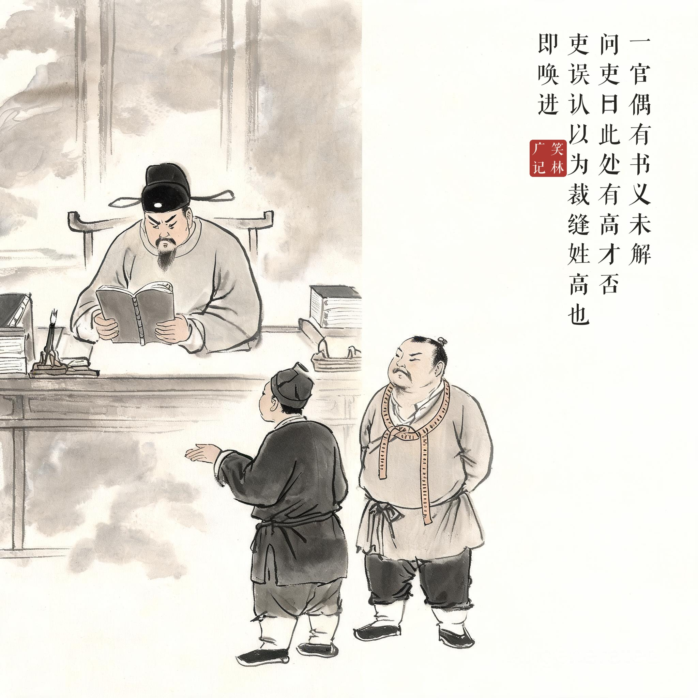
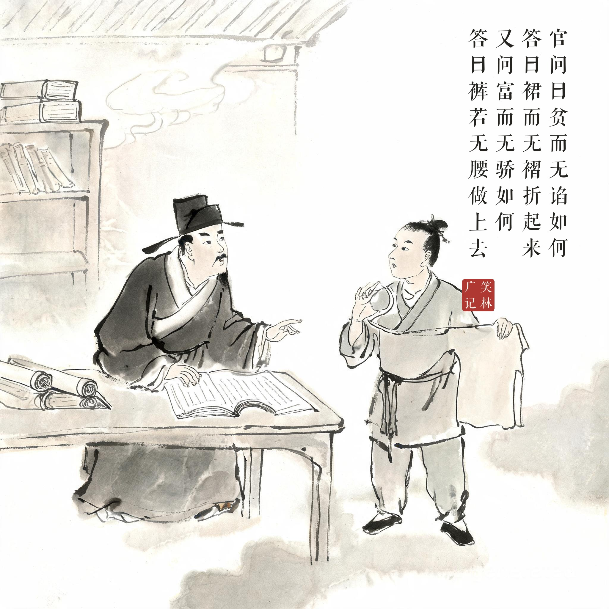
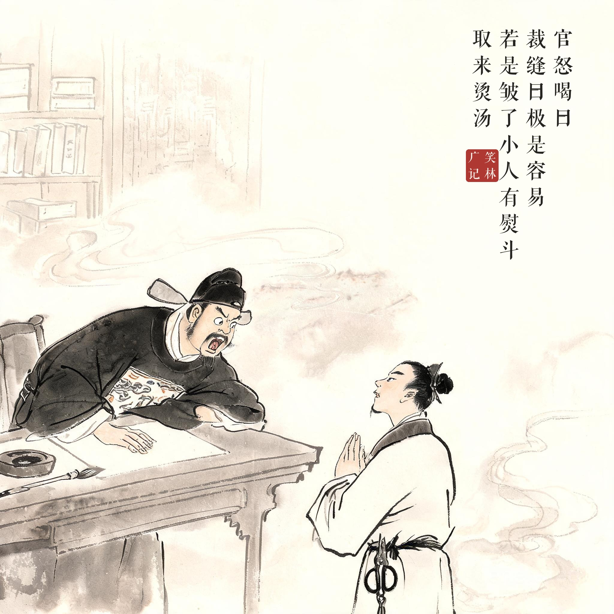

《笑林广记 · 谬误部》（[清]游戏主人纂集）
一官偶有书义未解，问吏曰："此处有高才否？"吏误认以为裁缝姓高也，应曰："有。"即唤进，官问曰："'贫而无谄'，如何？"答曰："裙而无襉，折起来。"又问："'富而无骄'，如何？"答曰："裤若无腰，做上去。"官怒喝曰："唗！"裁缝曰："极是容易，若是皱了，小人有熨斗，取来烫汤。"
一位官员有句书没读懂，问属下："此地有高才吗？"小吏听成了姓高的裁缝，答："有。"当即领进来。官员问："'贫而无谄'怎么讲？"裁缝答："裙而没有褶，叠起来就行。"又问："'富而无骄'怎么讲？"答："裤腰没了，往上做就是。"官员怒喝一声。裁缝说："这容易，若是起皱了，小人有熨斗，取来烫平。"
高才遇上高裁缝，风马牛不相及的两个人愣是完成了一场学术研讨——最绝的是结尾，连怒斥都进了他的专业清单。
题款两处从权：底本"裙而无襉"之襉为裙裥本字，字库缺收，从今义作"褶"；"官怒喝曰唗"之唗为叹词，字库缺收从略。白话均依底本。